6.810 Engineering Interactive Technologies (fall 2020)
Electroluminescent Displays + Electronics on 3D Surfaces
In the next two labs, we will build an interactive mug. It can sense its own temperature and display how hot it is with an electroluminescent display that we will print in this lab. The final product should look like this:
(insert picture of the mug here)
You will make the display yourself from scratch using airbrushing and inkjet print and assemble the rest of the design.
Your Task for Lab 3:
Fabrication and Control of Electroluminescent Displays
In lab 3, we will fabricate an electroluminescent display and build the controller circuit to turn it on and off.
Recall from the 'display' lecture that electroluminescent displays consist of 4 layers: two conductive layers that sandwich the light emitting phosphor layer and the dieletric layer. The top conductive layer is a silver or copper layer. The bottom conductive layer is transparent (ITO on transparent PET) otherwise you wouldn't be able to see the phosphor glow. To avoid shorts, the insulating dielectric layer prevents the two conductive layers from touching. And once you apply an AC on the two conductive layers, the resulting electric field between them will excite the phosphor and make it glow.
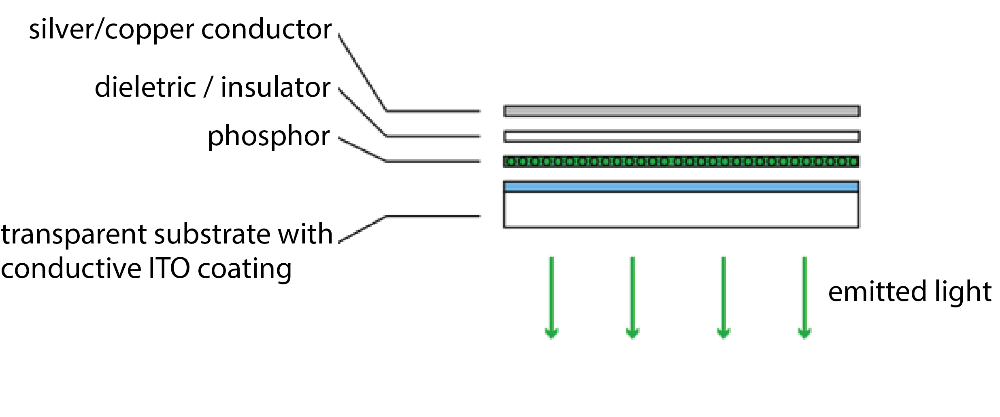
As you can see in the photo, we want to print a display shaped as a steaming coffee mug.
To make your display have a particular shape, consider the following: The display will only glow in those area that both have a top electrode (ITO sheet) and bottom electrode (copper).
Any area that only has a top electrode (ITO) but is not covered by the bottom electrode (copper) will not glow.
Thus, in order to make our display have a certain shape, we actually only need to shape either the top OR the bottom electrode, and not both.
For our display, we will shape the bottom electrode (copper) by laser cutting a stencil, applying the stencil on the EL display and spray the copper electrode using this stencil.
Thus, only the areas where the copper passes through the stencil will make the display glow.
Fabricating the Display:
ITO, Phosphor, Dieletric, Copper
You will fabricate your display in teams.
As a team of four students, each student will spray one layer for the team.
So only if all team members do a good job, your display will actually work in the end.
Decide Spray Order for your Team
If you haven't already, decide which team member is going to spray what.
Enter the team member's name and spray times here in this google spreadsheet.
The ITO coated PET is just a PET sheet that we will provide you.
Fabrication and Control of Electroluminescent Displays
ITO, Phosphor, Dieletric, Copper
| Team Member 1 | Spray the first layer: Phosphor |
| Team Member 2&3 | Spray one layer each: Dielectric. We will do two passes on the dieletric to make sure it is really covering everything otherwise your display will short circuit |
| Team Member 4 | Spray the last layer: Copper |
We will call it a success if 50% of your displays work, i.e. we will have you fabricate some extra just in case.
All Team Members: Read Spraying How-To
Before your team comes in for spraying, please make sure you read the following tutorials:
We will show you most of this when you come in to spray, but please familiarize yourself with the spraying process so you have a rough idea what's coming.
For spraying, we will have a compressor that creates air pressure and a spraygun, which is connected to the compressor, ready for you.


Team Member 1: Prepare ITO and Spray Phosphor Layer
Before we can spray the phosphor layer onto the ITO sheet, we have to do a few preparation steps.First, you need to cut a cardboard underlay for your ITO sheet.
While spraying, you will hold onto the cardboard since you need to cover the entire ITO sheet with spray paint.
Cut the cardboard into shape so that your ITO sheet can comfortable fit into the middle and you have enough space to hold the cardboard with your hand without touching the ITO.
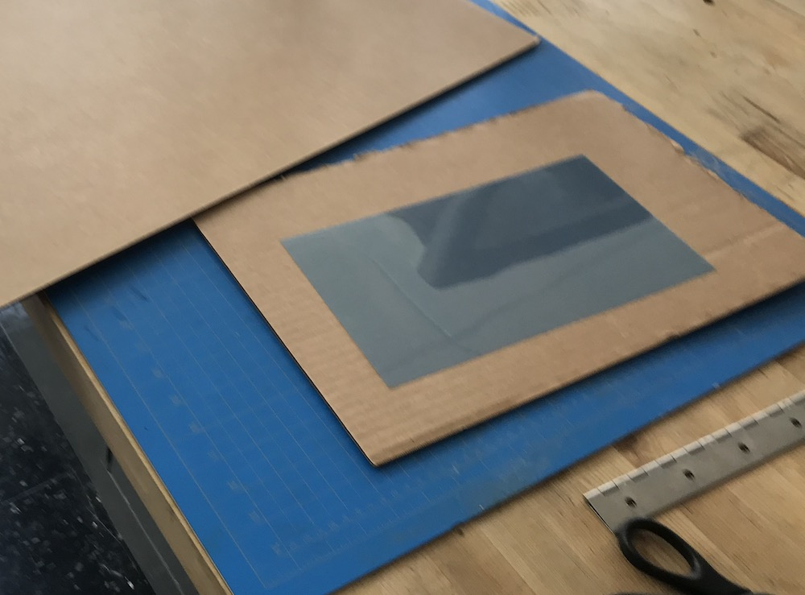
Before we can tape the ITO onto the cardboard, we first need to remove its protective cover foil.
This needs a bit of fumbling but we trust you will be able to get it off.
The ITO sheet is sensitive to bending so try to not bend the sheet too much while you try to pull of the cover foil.
The ITO sheet is only conductive on one side (i.e. the side where we just removed the protective coating).
If you are unsure which side that was use a multimeter to check which side is conductive.
Imagine how frustrating it would be if all your team mates come in for spraying just to find out at the end you sprayed on the wrong side of the sheet and nothing will work!
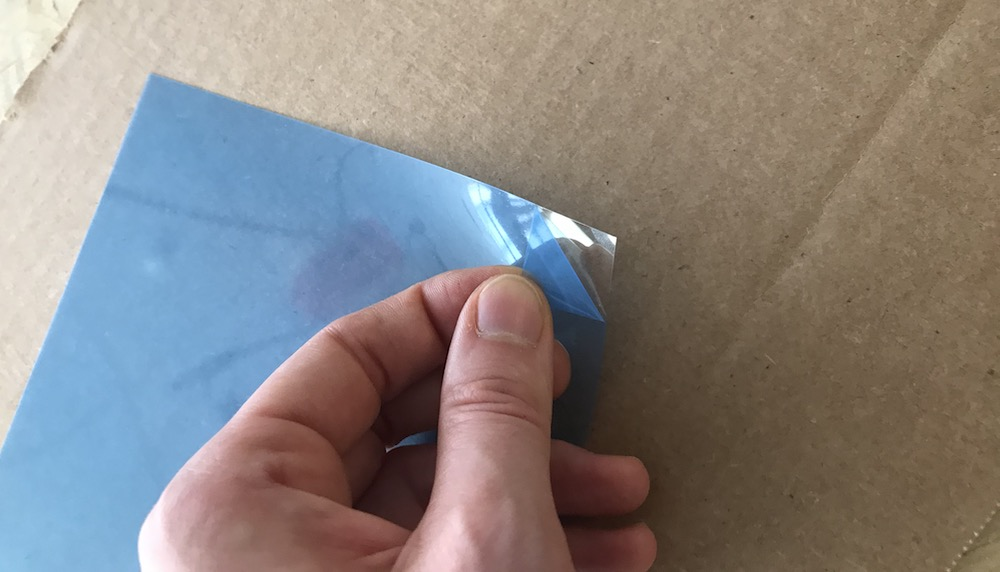
Once you know which side is conductive and needs to face up, you can attach the ITO sheet with tape to the cardboard.
Tape around the entire area of the sheet, it will help you later to see where you already sprayed since you can monitor the marks on the blue area around the ITO.
Try to not put too much tape on the ITO sheet itself since we need the entire ITO area for our displays.
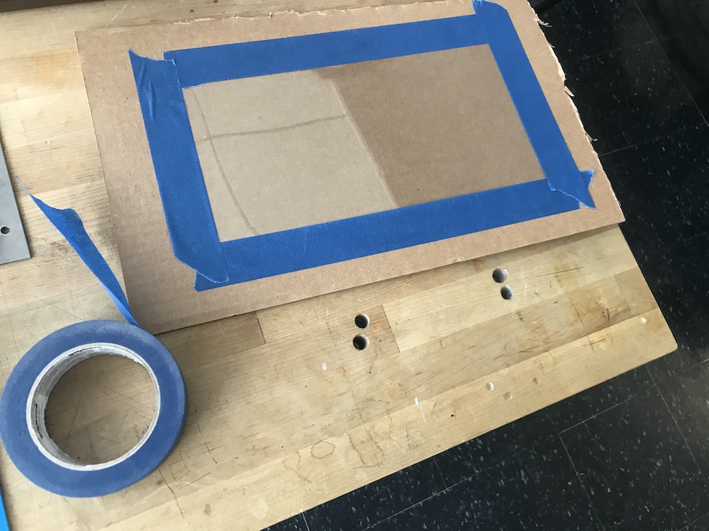
Before we start spraying, we need to tape off a strip at the bottom of each row of displays.
We don't want any spray ink there since we will use this area to connect to our circuit later.
Using regular transparent tape, tape of a strip on both the middle and the bottom of your ITO sheet.
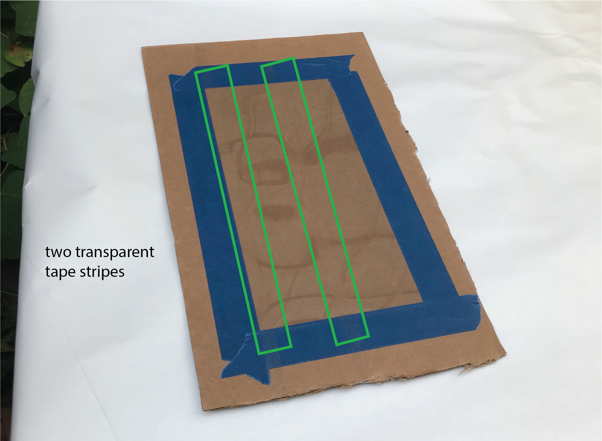
Next you can spray the phosphor.
You will need to cover the entire area.
We recommend doing a first pass vertically by moving the hand up and down and then a second pass horizontally moving left to right.
We want to make sure we have even coverage, if there is more phosphor in one area than another your display will have some brighter and some darker spots and will not be very even, so try your best to achieve even coverage.
We will use a UV flashlight, which makes the phosphor glow, to better see where we already covered the surface sufficiently.
Once you are done, we need to let the layer sit for at least 30 minutes to have it dry before your team mate can come in to spray the dieletric layer.
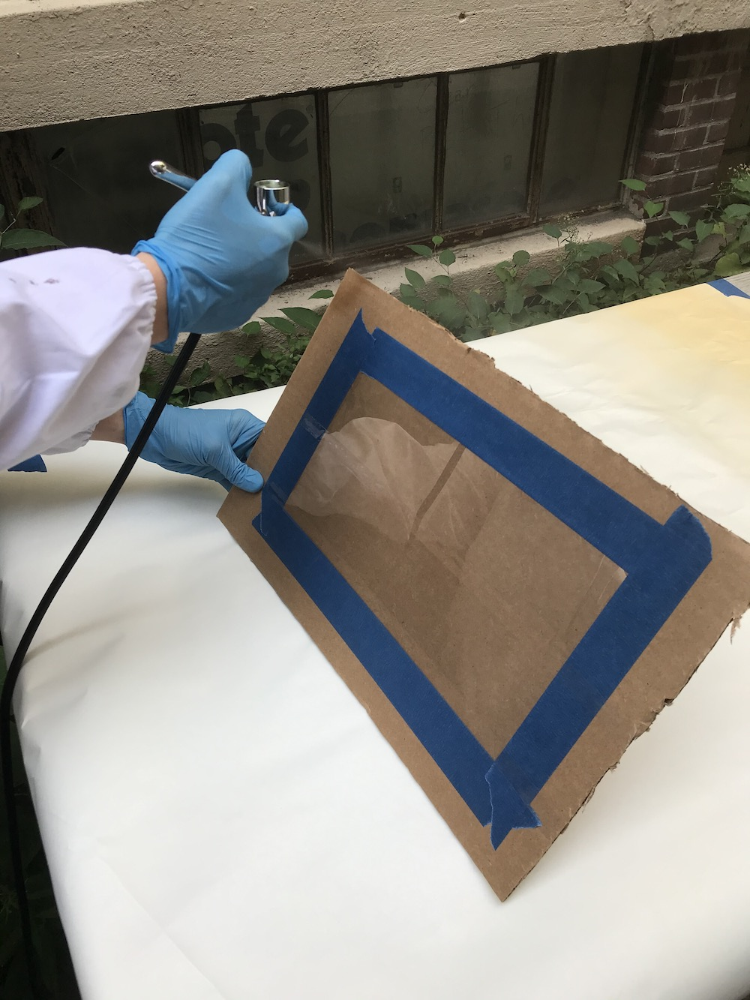 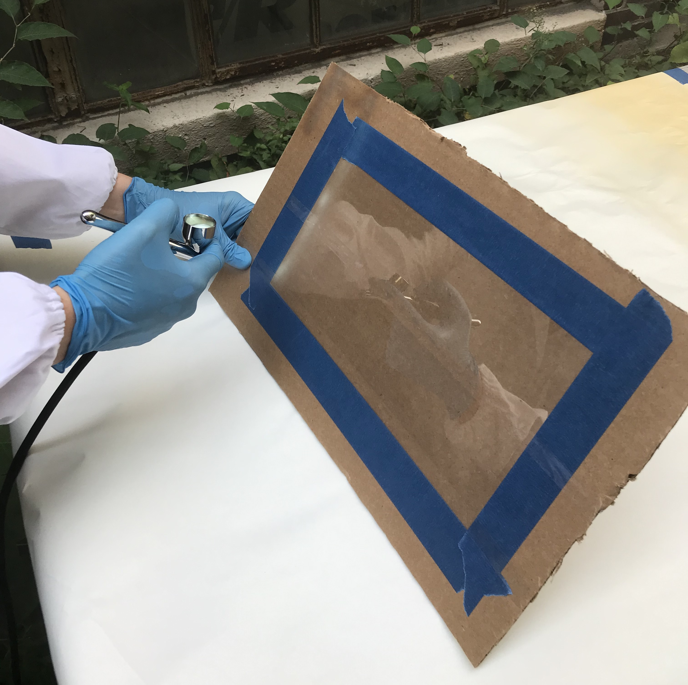
Team Member 2 + 3: Spray Dieletric Layer Pass 1 and Pass 2
Next, we will spray the dieletric layer.Again, we will cover the entire sheet with the dieletric material.
Remember that the dieletric layer is super important.
If the dieletric layer is not covering every single pixel there will be a short circuit in this area since the ITO sheet, phosphor layer, and copper layer (last layer) are all conductive and will touch each other and thus the display will not work.
To ensure that the dieletric is really covering everything, we will apply two passes of dieletric, i.e. after one team member finished the dieletric and had it dry for 30 minutes we will have another team member come in to repeat the procedure.
add picture
Team Member 4: Laser Cut Stencil and Spray Copper Layer
Before Spraying the Copper Layer: Laser Cut the Stencil
(1) Download the Stencil Design
You can find the stencil design file we prepared for you here.
As you can see, if contains several stencils in a row, this is because you make 2 displays for each team member (8 in total) to ensure that a good number of them work and you will be able to take a working display home.
(2) Check Drawing Size and other Drawing Settings
Next, open the file in your drawing program that you used for laser cutting your business card.
Check if the stencil design has the right size.
It should be 0.2"x0.2", 5x5cm or 500x500 pixel and show 8 little mugs and an outline around them.
Also don't forget to check the other laser cutter drawing settings (line color, thickness) as described here.
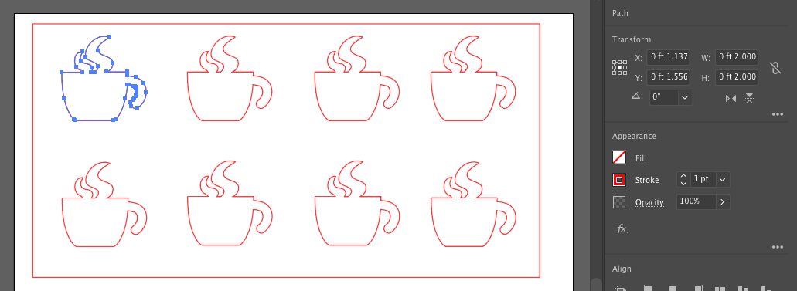
(3) Laser Cut your Stencil (Go to a Laser Cutter Office Hour)
Go to one of the laser cutting office hours this week and laser cut the stencil.
If you need to remind yourself how the laser cutter works, check this tutorial here again.
Remember that the power/speed settings for cutting a material depend on the material, i.e. which type of material it is and how thick it is.
We will cut our stencil from a transparent adhesive sheet.
The adhesive part will make it easy to attach the stencil to the existing three display layers.
The transparency will help us in seeing if we apply the stencil in the correct area.
The laser cutter settings are as follows: power: 50%, speed: 100%, thickness: 0.2inches.
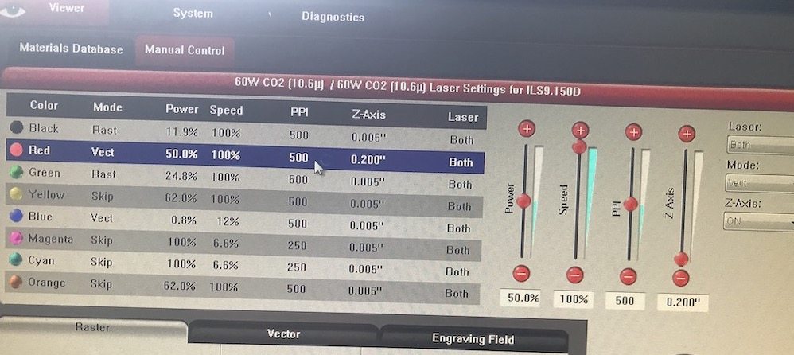


Spraying the Copper Layer:
Before we can spray the copper layer, you need to apply the stencil (we will do this together when you come in for spraying).
First peel the protective layer from the back side of the foil.
add picture
The foil is adhesive on one side.
Stick the stencil on top of the display sample but don't apply to much pressure so you don't damage the underlying layers.
add picture
Make sure that the cut out coffee mug covers the white areas completely.
add picture
Once the copper layer is sprayed, a good first test is to see if the copper layer is conductive.
As in lab 1, use a multimeter and check if the layer is conductive. The tips of the multimeter are quite pointy and you can damage the layers if you press too harshly on the copper, so be gentle.
You should read something around 5-20Ω resistance.
add picture
Attaching Wires to your Display (everyone, continue here)
Once we have all layers sprayed, please come to an office hour to pick up your final display.You can find all available office hours here: add office hour info. In the office hour, we will show you how to add some wires to your displays so we can power it up.
As you can see below, we need to find a way to attach two wires to the EL display: (1) to the copper layer and (2) to the ITO sheet (i.e. one for GND and one for power).
Replace image with photo

While adding wires, make sure to avoid bending or folding your display. ITO is a quite brittle material. While it can withstand a certain degree of bending, it can easily break if you bend it too much and it will definitly break if you fold it.
Our first goal is to connect to the ITO. To do this, take your EL display and remove the protective tape on the bottom of the display. You should see now a clean and exposed area of ITO (the clear PET sheet). Get some copper foil and apply one strip over the whole length from left to right on the ITO. Leave a little flap that makes it easier to connect a crocodile connector to it.
Next, we have to connect to the copper layer. This one is already exposed so you just have to apply some copper tape right at the center of the coffee mug. Again, take one strip of copper tape but try to make it as large as the coffee mug. It is good practice to cover a large area to ensure a good connection. Again, leave a little flap that makes it easy to connect to it with crocodile wires.
Powering Your EL Display
EL displays require an alternating current between the two elecrodes to excite the phosphor and make it light up.Therefore, just connecting it to a DC power supply, like the 3.3V DC from your ESP32, won't do the trick.
We therefore use an inverter to generate 110V AC from your 3.3V DC ESP32 power supply.
The 110V are low current and not really dangerous, but you can get a little shock when you touch both electrodes.
While building your circuit, you must adhere to the following rules:
- never touch the display or any part of the circuit while your microcontroller is connected to power
- unplug the microcontroller from your laptop before you do any wiring, only after it is unplugged you are allowed to touch the circuit and exchange wires and components
- once you are done wiring and you have made sure you are not touching any part of the circuit anymore, plug the microcontroller back in
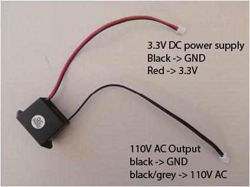
Your first step is to connect the 110V AC inverter output to the display.
Use two jumper wires and stick them into the white connector of the black output wires of the inverter.
The other end of the jumper wires then goes onto a crocodile clamp each.
The crocodile clamps can then connect to the copper flaps of your display (one goes to the top flap and one to the bottom flap).
Be careful that you don't rip off the flaps when working with the wires.
Next, you have to connect the inverter to the 3.3V power supply of your microcontroller.
Use two jumper wires again to stick them into the white connector of the red/black wire of the interverter.
Let's keep the convention that black wires are GND and red wires are +3.3V.
Next connect the red wire to your microcontrollers 3.3V and and black to the ESP32's GND.
Once you are done wiring, turn the display around such that you see the top side.
The copper should be on the bottom now and you can't see it anymore.
When this is done, make sure you are not touching the circuit anymore at any place.
Then plug your ESP microcontroller into your computer.
You should see a bright EL display in the shape of the coffee mug now.
If you see that, congratulations.
If not, check if all wires are connected properly or ask for some help from the TAs.
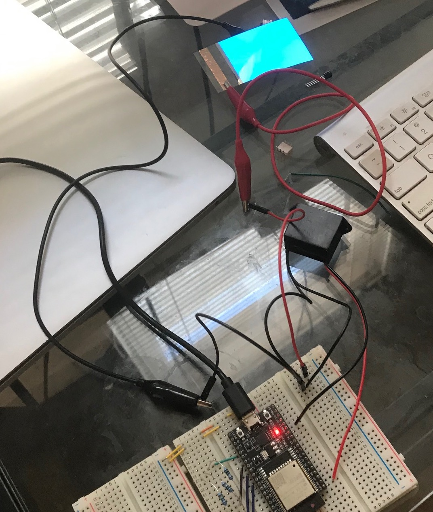
Building the control circuit for EL Displays
So now you can turn on/off your display by plugging and unplugging either the display or the micrcontroller.That's ok but it would be nicer to do this via code and not by physically plugging/unplugging.
The goal of this final part of the lab is to build a control circuit that lets you do exactly this.
To turn on/off the display via code, we need an AC switch.
The ESP32 microcontroller does not have a suitable AC switch built-in. Thus, we have to build our own.
Our switch will consist of a triac and an optocoupler.
A triac is similar to a transistor but also block alternating current (AC) while a transistor can only block direct current (DC). By switching the triac on/off, we can thus block the AC current coming from the power supply, which allows us to turn the display on/off under computer control. The triac's pins and how you add it to a circuit is similar to a transistor though. It has two connectors for + and GND and a Gate that can trigger it to let current pass through or block it. The symbol and a picture of the triac that we will use in this lab is below:
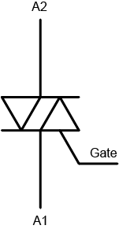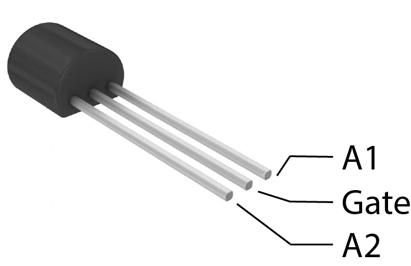
The ESP32 is rated only up to 12V so a higher voltage could potentially damage the microcontroller's components. Therefore, we have to isolate the ESP32 from the 110V power supply. For this purpose, we will use an optocoupler. An optocoupler houses an LED and a photo-triac. When the LED turns on, it activates the opto-triac and let's energy flow. Both components are not directly connected through a wire but galvanically isoltaed. The trigger mechanism works purely through light. This safety measurement ensures that no voltage of the 110V power supply can jump over to the microcontroller. You can see how the symbol and the component looks like:
 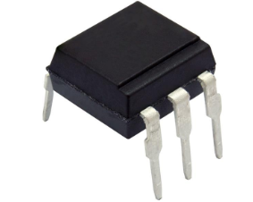
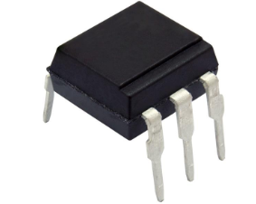We will setup the components to work together in the following way:
(1) the ESP32 controls the optocoupler and thereby protects itself from any high voltage.
(2) The optocoupler then controls the triac to open and close the AC switch to let power through or cut if off.
We have to add a few resistors to the circuit to limit the current at the optocoupler's LED and the triac to prevent it from being damaged. The final circuit looks like this:
Bringing it all together, our AC switch circuit should look like this:
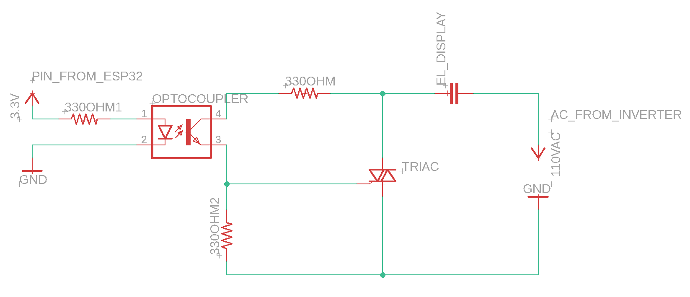
Get yourself a breadboard, wires and the components and start building it. You might have to find out which way around you have to add the optocoupler. Note the little dot on its top. Look at the datasheet where the pins are: Datasheet
Write a Program to turn the Display On/Off
Now that we have wired up our control circuit, we still have to write the code for it.As an example, we will write a script that lets the display blink.
This is very simple with the circuit you already built.
Check again, to which pin you connected the optocoupler and us this pin to turn it on and off
Write a Program to Dim the Display
In addition, it would be nice to not just turn it on/off but also set the displays brightness (e.g. dimming it down).You should remember from 6.08 that you can use pulse-width-modulation to dim light sources like an LED. Just a short recap, PWM means that you turn off and on a signal for a ceratin duty cycle (see Figure below). The longer the singal is turned off in one cycle that darker the light source will be. And if the tunring on and off happens very fast, it's invisble to the human eye and you can control the perceived brightness of a light source.
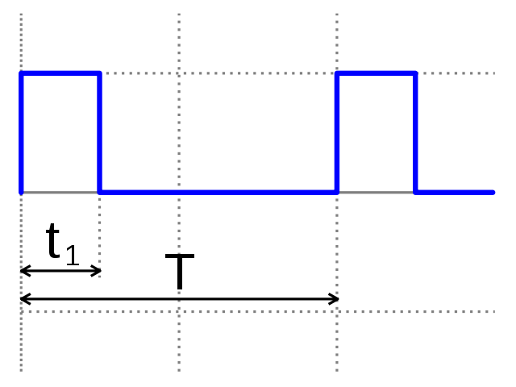
Use it to let the display increase and decrease in brightness. The increase from 0% to 100% duty cycle should take 2 seconds and then dim it down again in another 2 seconds. And let it repeat this blinking infinitely.
Checkoff 3: Show your EL display and let it blink